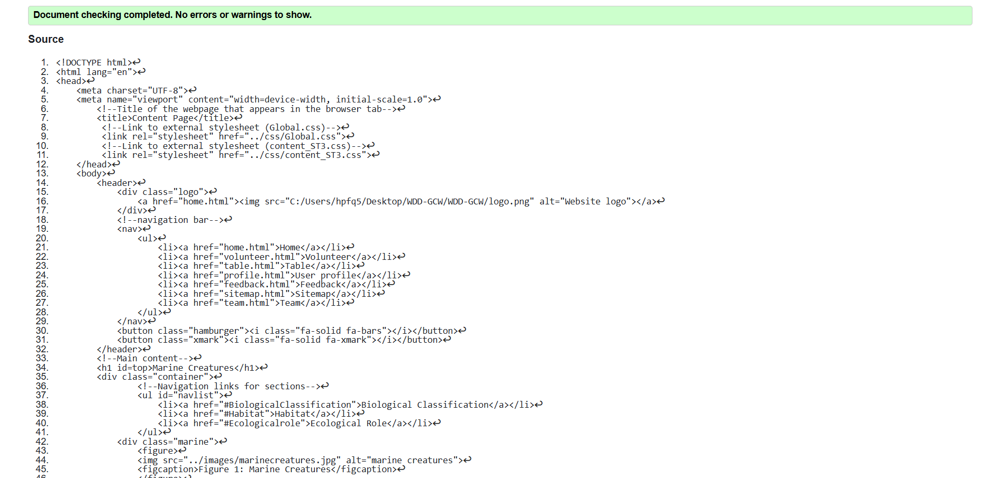
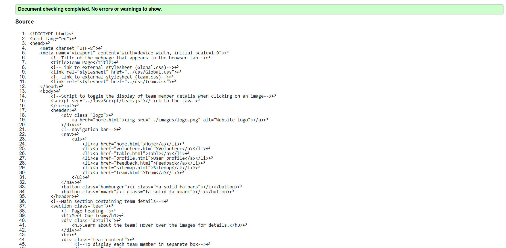

Feedback Form validation report
During the validation process for the feedback form , I encounterd a few erros and warnings. One of the issue was file path for logo. I have fixed that error using relative paths to ensure compatibility across different systems. For the feedback form there was an minor error because a label and I fixed it.

Back to Page Editor page
Include a link back to the corresponding section of the Page Editor.
Team Page validation report
During the validation process for the team page, I encounterd a few erros and warnings. One of the main issue student image's file path. I corrected it by replacing the file path with relative paths to ensure compatibility across different systems.

Back to Page Editor page
Include a link back to the corresponding section of the Page Editor.
Content Page validation report
For the content page, validation highlight some minor errors. Improperly closed html tags and image file paths. I corrected those errors by closing the html tags correctly and relative paths to ensure compatibility across different systems.
Back to Page Editor page
Include a link back to the corresponding section of the Page Editor.